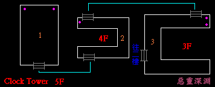
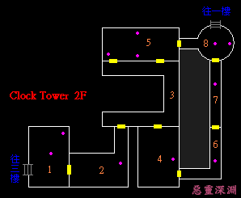
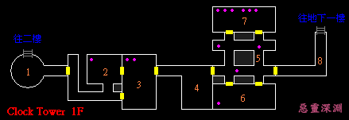
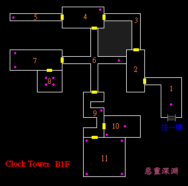

|
惡靈古堡～生存者２-----地圖攻略～Dungeon Mode時鐘塔
|
| 地圖解說 地圖上所標示的部分道具會隨著Mission關卡的不同而有些許改變
 １綠色藥草、手槍 ２急救箱 ３散彈槍、手槍
 １手槍、散彈槍 ２急救箱 ４來福槍 / 機關槍 ５來福槍 / 機關槍、Pz對甲硫彈EX、腰包（可增加Clock Tower所有任務中的武器攜帶數） ６寶石 ７麥林手槍 / 榴彈槍 ８來福槍 / 機關槍、綠色藥草
 ２散彈槍 ３手槍、急救箱 ５來福槍 / 機關槍、手槍、寶石 ６散彈槍 ７綠色藥草 x 3、麥林手槍 / 榴彈槍、來福槍 / 機關槍、Pz對甲硫彈EX
 １散彈槍 ４寶石 ５急救箱 ６急救箱 ７急救箱、寶石 ８急救箱、麥林手槍 / 榴彈槍、散彈槍、手槍 ９散彈槍 １０綠色藥草、散彈槍 １１急救箱 x 2、手槍 x 2 任務解說 Mission１：消滅潛伏在地下區域的Boss 過關條件：打倒位於地下一樓１０的Boss大蜘蛛 倒數計時：30分鐘 過關獎勵：Beretta M93R x 50發（Claire） / Gold Lugar x 50發（Steve） 重點指導：第一關算是條件最少的一關，最好趁機多蒐集武器，另外重要的「腰包」也要趕快拿到手 Mission２：收回時鐘塔內的所有寶石 過關條件：取得在各個樓層共四顆寶石後，打倒地下一樓１０的大蜘蛛 倒數計時：30分鐘 過關獎勵：AK47 Assault Rifle x 150%（Claire） / Ingram M-10 x 200%（Steve） 重點指導：繼續蒐集武器，尤其是威力強大的麥林手槍 / 榴彈槍 Mission３： 消滅潛伏在時鐘塔的所有怪物 過關條件：消滅時鐘塔中的99隻怪物後，打倒地下一樓１０的大蜘蛛 倒數計時：40分鐘 過關獎勵：Sbass 12 .S.S散彈槍 x 50發 重點指導：由於要擊倒地圖中安排的99隻怪物，所以幾乎所有的房間都必須要進去，利用這個機會好好熟 悉環境，注意哪裡有可以擊破的燈、箱子、敵人的安排配置。 Mission４：達成Combo x 60次 過關條件：Combo計量表達到60 HIT後，打倒地下一樓１０的大蜘蛛 倒數計時：15分鐘 過關獎勵：Magnum x 20發（Claire） / M79 Grenade Launcher x 30發（Steve） 重點指導：此任務不在於打的敵人多寡，而是在於累積HIT計量表，建議的武器為手槍、麥林手槍 / 榴彈 槍，武器不要帶太多，以免浪費時間在切換武器上。進行遊戲時除了能快速累積計量表的金 幣、銀幣外，隨處可見的燈要好好利用，對沒有必要而且難賺計量表的房間儘量不要進去。 Mission５：6分鐘內逃離時鐘塔 過關條件：6分鐘內抵達地下一樓１０，並打倒大蜘蛛 倒數計時：6分鐘 過關獎勵：Pz對甲硫彈EX x 5發 Mission６： 獲得6000萬分以上 過關條件：Point達到6000萬分後，打倒地下一樓１０的大蜘蛛 倒數計時：15分鐘 過關獎勵：Rocket Launcher x 10發 重點指導：要在15分鐘以內獲得6000萬分，考驗玩家的技術和對這個關卡地圖的熟悉度，關鍵點就在 Combo、Critical，累積計量表來得到更高的分數，以Critical一擊必殺快速解決敵人。
將時鐘塔的六個任務完成之後，可以欣賞一段遊戲中四個人物戰鬥的模樣，除了Claire和Steve之外，當然還 有兩個隱藏人物。 |
惡靈深淵Biohazard Abyss http://98.to/coolbio